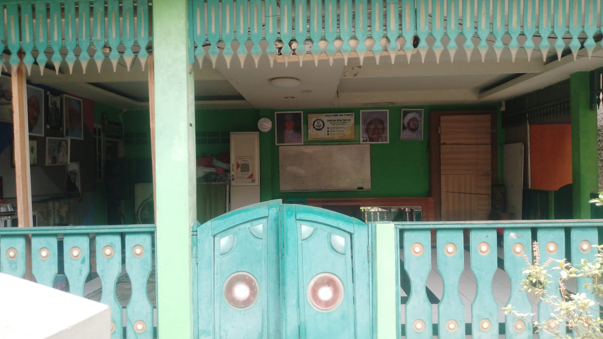
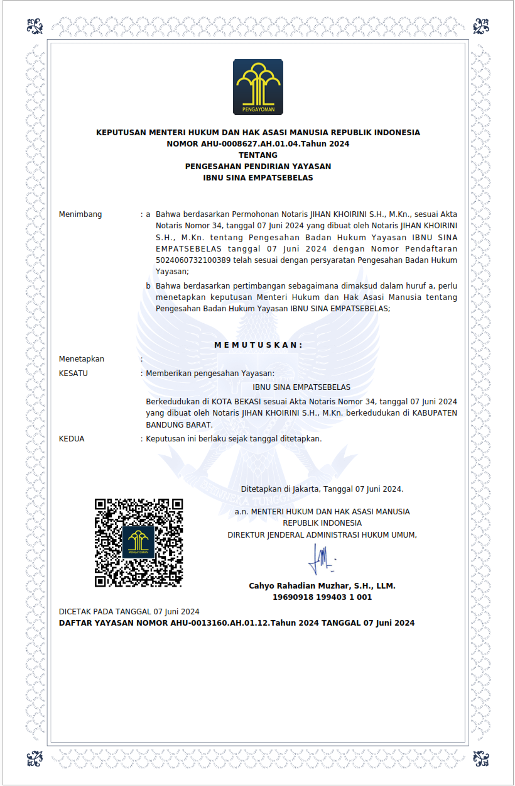
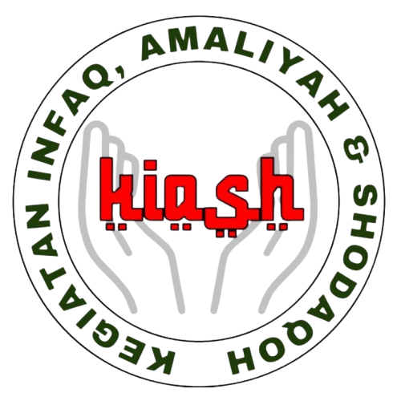
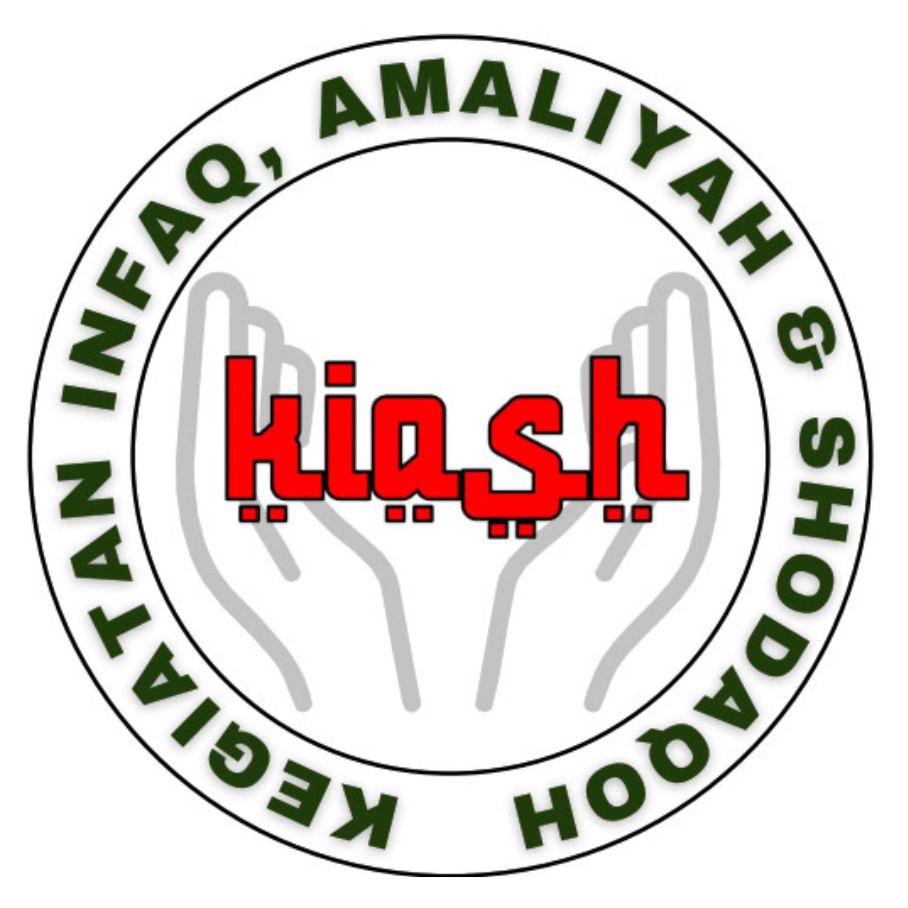
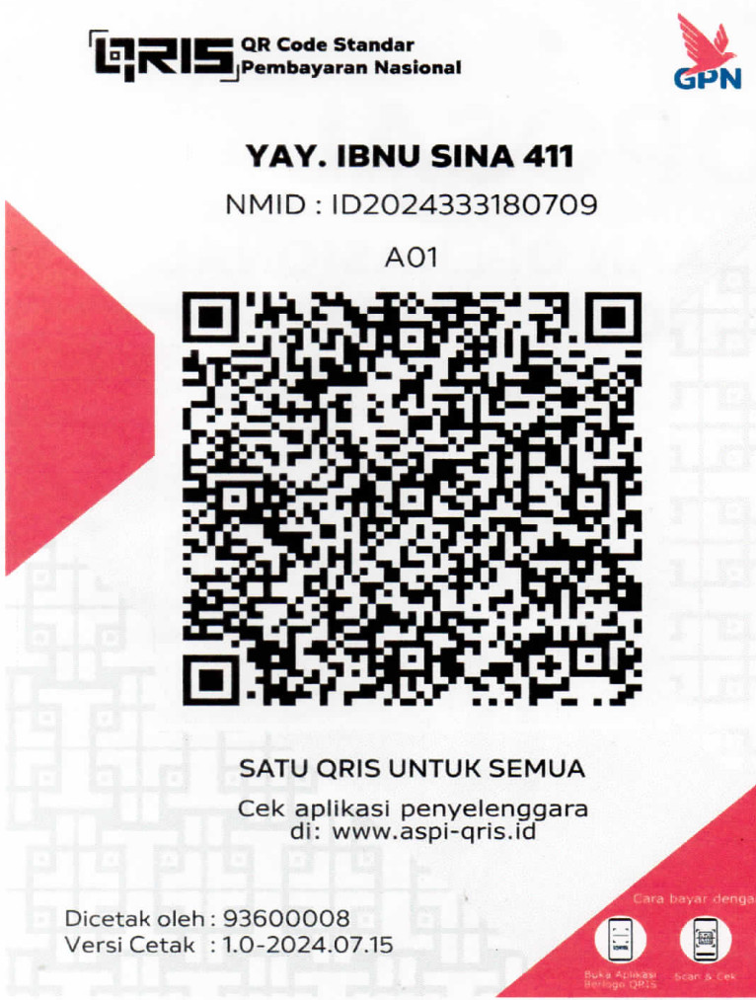

Yayasan Ibnu Sina 411
Lembaga yang bergerak di bidang sosial dan kemanusiaan. Mari bergandengan tangan meringankan beban sesama untuk menggapai ridha Ilahi.
Santunan Yatim
Memberikan kepedulian dan bantuan untuk anak-anak yatim, masakin, dan faqir.
Aksi Sosial
Layanan pengurusan kematian, ambulance, dan peringatan Hari Besar Islam.
Pendidikan
Dukungan pendidikan formal dan non-formal untuk generasi masa depan.
Profil Yayasan
Tentang Kami

Hadir Untuk Melayani Umat.
YAYASAN IBNUSINA 411 adalah lembaga nirlaba yang berdedikasi tinggi di bidang sosial kemanusiaan. Kami berkomitmen penuh untuk menjadi perantara kebaikan antara para dermawan dengan mereka yang membutuhkan bantuan.
Semua program yang kami jalankan didasari pada nilai-nilai keislaman, transparansi, dan gotong royong antar sesama, dengan fokus utama pada pembedayaan yatim, dhuafa, dan pendidikan.
Visi Kami
Menjadi lembaga sosial kemanusiaan terpercaya yang mampu menebar rahmat, membangun kemandirian umat, dan mencetak generasi rabbani yang berakhlak mulia serta berpendidikan.
Misi Kami
- Menyantuni anak yatim, masakin, dan faqir secara berkesinambungan.
- Memberikan layanan sosial darurat seperti pengurusan jenazah dan ambulance.
- Memfasilitasi pendidikan formal maupun non-formal bagi kalangan tidak mampu.
- Mengelola dana infaq umat secara amanah dan transparan melalui program KIASH.
Susunan Pengurus Yayasan
Dewan Pembina
- Syahril KETUA
- Suryanto ANGGOTA
Dewan Pengurus
- Acep Setiawan KETUA UMUM
- Andri Jondiharto KETUA
- Anjar Priawan SEKRETARIS
- Fajar Haryono BENDAHARA
- Karsono ANGGOTA
- Sugeng Prianto ANGGOTA
Dewan Pengawas
- Sarman KETUA
Legalitas Yayasan
Yayasan Ibnu Sina 411 telah resmi terdaftar dan disahkan oleh Kementerian Hukum dan Hak Asasi Manusia (KEMENKUMHAM) Republik Indonesia.

Ketuk gambar untuk memperbesar

Pojok KIASH
Kegiatan Infaq, Amaliah & Shodaqoh (KIASH)
Mari bergabung dalam barisan kebaikan dengan iuran infaq wajib yang ringan dan membawa berkah.
Hanya
Rp 30.000 / Bln
Apa itu KIASH?
KIASH merupakan wadah sentral penghimpunan dana dari para jamaah dan donatur Yayasan Ibnu Sina 411. Dengan iuran wajib sebesar Rp 30.000 setiap bulannya, dana ini akan disatukan dan disalurkan secara utuh untuk menopang seluruh pilar kegiatan yayasan.
Alokasi Dana Terkumpul:
-
Santunan Yatim & Dhuafa
-
Ambulance & Kematian
-
Kegiatan HBI
-
Pendidikan Formal & Non
-
Operasional Yayasan
﷽
AKAD KEANGGOTAAN IBSI KIASH
Dengan berlindung kepada Allah swt dan senantiasa memohon RidhoNya, saya yang bertanda tangan di bawah ini menyatakan :
- Ikhlas dan ridho mengikuti segala ketentuan yang disyaratkan dalam keanggotaan IBSI KIASH.
- Telah memahami bahwa Dana KIASH dialokasikan untuk:
- SANTUNAN YATIM, MASAKIN DAN FAQIR
- SOSIAL (Pengurusan Kematian, Ambulance, HBI/Hari Besar Islam dan Kegiatan sosial keagamaan Islam lainnya)
- PENDIDIKAN (Formal dan Non formal)
- OPERASIONAL ADMINISTRASI dan PENGEMBANGAN YAYASAN
- Telah memahami bahwa keanggotaan KIASH berlaku sejak saya mengisi formulir dan menandatangani akad ini serta telah melampirkan fotocopy KTP & KK. Keanggotaan bersifat selamanya hingga saya mengundurkan diri ditandai dengan surat pengunduran diri atau pembatalan keanggotaan akibat tidak memberikan dana KIASH selama 3 bulan berturut – turut.
- Bersedia apabila dalam 3 bulan tidak ikut andil pengisian dana KIASH maka keanggotaan telah dianggap batal dan koordinator KIASH berhak mengambil kembali Kotak KIASH yang pernah diberikan kepada saya.
- Bersedia apabila dalam jangka 1 bulan setelah menjadi anggota IBSI KIASH jika salah satu keluarga dalam satu KK (Kepala Keluarga) yang mendapatkan musibah, yaitu meninggal dunia, maka mendapat pengcoveran seperti : Kain Kafan, Amil, Ambulance dan Makam (Sesuai lokasi Yang sudah di tentukan).
- Pendaftaran Awal Sebesar Rp. 50.000, dengan Rincian iuran Awal & Biaya administrasi
Formulir Pendaftaran
Isi data di bawah ini, konfirmasi akan otomatis dikirimkan ke admin via WhatsApp.
Program Aksi
Kegiatan Kami
Empat pilar utama penyaluran dana kebaikan Yayasan Ibnu Sina 411 untuk kesejahteraan umat.
Santunan Yatim, Masakin & Faqir
Penyaluran bantuan dana tunai, sembako, dan kebutuhan pokok lainnya secara rutin kepada anak yatim piatu, masyarakat miskin, dan faqir di lingkungan binaan yayasan.
Bantuan Sosial & Keagamaan
Layanan tanggap darurat yang meliputi:
- Bantuan biaya pengurusan jenazah/kematian.
- Layanan operasional Ambulance untuk masyarakat.
- Penyelenggaraan Hari Besar Islam (HBI) dan kajian keagamaan.
Pendidikan
Membantu biaya pendidikan (beasiswa) serta menyediakan fasilitas belajar bagi anak-anak kurang mampu, baik di jalur pendidikan formal maupun non-formal (TPA/Madrasah).
Operasional Administrasi
Pembiayaan kebutuhan operasional dan administrasi harian yayasan agar sistem penyaluran bantuan, pendataan donatur, dan kegiatan sosial dapat berjalan profesional dan akuntabel.

Kotak Amal
Salurkan Infaq, Amaliah, dan Shodaqoh Anda melalui rekening resmi Yayasan Ibnu Sina 411.
وَالصَّدَقَةُ تُطْفِئُ الْخَطِيئَةَ كَمَا يُطْفِئُ الْمَاءُ النَّارَ
"Sedekah dapat menghapus dosa sebagaimana air memadamkan api."
(HR. Tirmidzi, no. 2616)
Transfer Bank
Bank Mandiri
166-00-0533640-9
a.n. YAYASAN IBNU SINA 411
Nomor rekening berhasil disalin!
Konfirmasi Donasi
Agar pencatatan amanah berjalan tertib, mohon konfirmasi donasi atau pendaftaran iuran wajib KIASH Anda melalui pesan WhatsApp.
Konfirmasi ke AdminScan QRIS

Scan menggunakan aplikasi
(Gopay, OVO, Dana, ShopeePay, M-Banking)